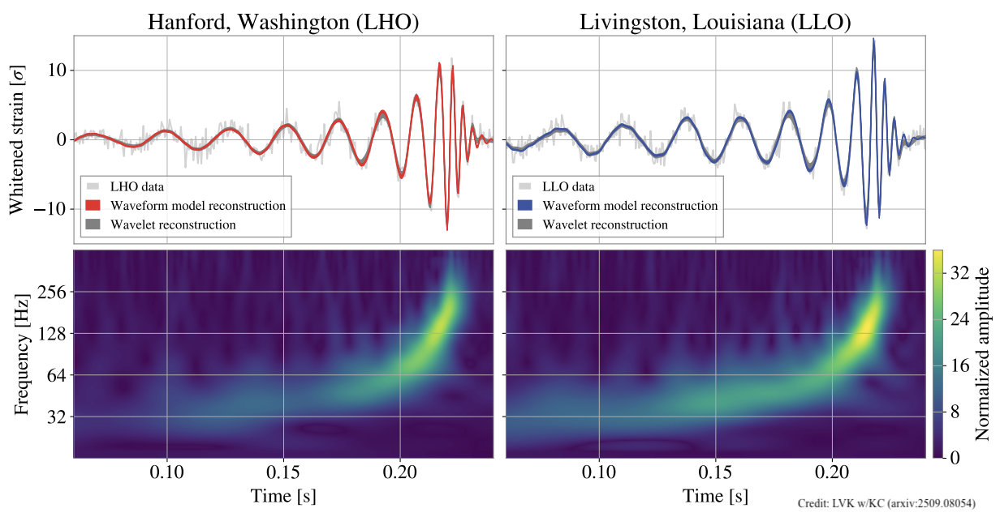
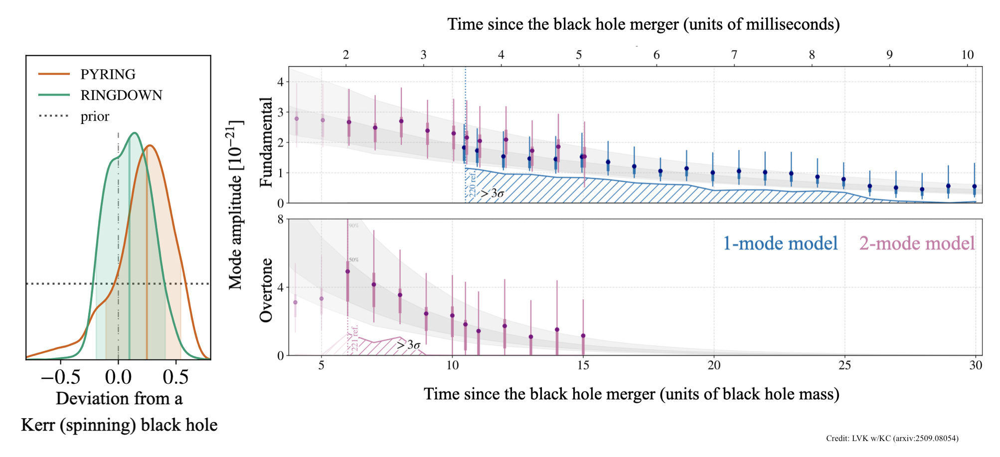
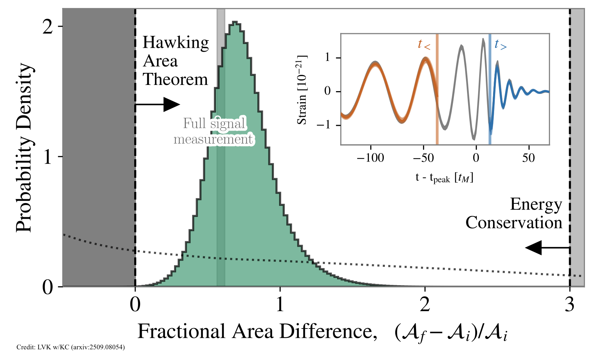

GW250114 and the nature of black holes

Black holes lie at the heart of fundamental physics, yet they are remarkably simple objects. Black hole mergers create the most extreme gravitational fields in the universe and can only be observed via the gravitational radiation they emit. The coalescence process starts with a long inspiral where two black holes orbit each other while emitting gravitational waves. After the violent merger, the remnant black hole "rings" like a bell as it settles into a stable state. On January 14, 2025, LIGO detected a remarkable signal that gave us the most detailed look yet of this process. At first glance, GW250114 is very similar to GW150914 - the first signal detected a decade earlier. Both signals came from merging black holes with masses around 30 times our Sun, minimal spin, and located roughly 1.3 billion light-years away. However, thanks to major detector improvements, GW250114 was recorded with an unprecedented signal-to-noise ratio of 80, compared to just 26 for GW150914. This exceptional clarity enabled us to carry out two powerful tests of fundamental physics: black hole spectroscopy and Hawking's area theorem.
According to general relativity, rotating black holes need only two numbers to describe them completely: mass and spin. This simplicity means all astrophysical black holes should follow the Kerr metric - Einstein's solution for rotating black holes. If the remnant is truly a Kerr black hole, it must ring at specific frequencies determined only by its mass and spin. Beyond their geometric simplicity, black holes also have remarkable thermodynamic properties: their event horizon area acts as entropy, and they radiate energy (Hawking radiation) with a temperature determined by their surface gravity. The behavior of black horizons is governed by Hawking's area law, which demands that the total event horizon area can never decrease - the final black hole must have more surface area than the sum of the two initial black holes.

After a merger like GW250114, the distorted remnant black hole settles down by emitting gravitational waves in specific "ringing" patterns called quasinormal modes, each with its own frequency and decay time. Since these frequencies depend uniquely on the black hole's mass and spin, measuring one mode tells us these properties (assuming Kerr), while measuring multiple modes tests whether the black hole truly follows the Kerr metric. Most events show only the longest-lived fundamental mode, while the shorter-lived overtone has been hard to detect due to its rapid decay. Previous hints of the overtone in GW150914 required using data dangerously close to the violent, complicated merger itself. GW250114's exceptional strength allowed us to confidently detect both the fundamental mode and overtone while safely excluding the merger data, providing a clean test of Kerr black hole predictions.

To test Hawking's area law, we measured the initial black hole areas using pre-merger data (carefully excluding the loudest merger cycles) and the final area using post-merger data. Previous tests with GW150914 were limited by weak signal strength and had to include risky merger data where the physics is less well-modeled. With GW250114's exceptional clarity, we obtained definitive evidence for Hawking's area theorem while again safely avoiding the troublesome part of the merger where gravity reaches its most extreme and unpredictable state. This confirmed that the remnant black hole's horizon area exceeded the sum of the initial areas, as predicted by the area law.